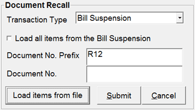

The Recall option allows you to recall (configurable) transaction types (expected transactions) like Sales Advice Slips, Sales Orders, Service Orders and Suspended Bills at any stage of a billing process. On recalling any of these transaction types, you get the items, which are entered previously in the respective transaction types. In a single billing process, you can recall any or all the transaction types available for that particular billing type (i.e., Product billing or Service billing). Once you recall a document in a terminal, the same document will not be available for recall in any other terminals. Customer validation can be done before recalling a transaction slip, if configured.
On clicking Recall button from the Billing window, Recall Details is displayed.

Transaction Type: Select the type of transaction from the drop down list.
The transactions types available for recall are Sales Advice Slip, Sales Order (for Product Billing), Service Order (for Service Billing), Suspension (for both Product and Service Billing) Palate Slip and Packing Slip.
Load all items from the <Transaction Type>: By default it is selected to load all items from the selected document. In case you do not want to load all items then deselect it. If deselected, you can scan or load only the required items from the selected document.
Doc No. Prefix: The document prefix used for the selected Transaction Type is displayed by default. You can edit this value, if required.
Document No.: Enter the document number. Alternatively, press F2 and the Document Search window for the selected Transaction Type pops up. You can browse for the document number in this window.
Load items from file: Click to load item details from an external file.
Notes:
• You may delete items from the document that is recalled, if configured.
• You may suspend a bill even after recalling any document. The suspended bill is available for recall later.
When you delete any items from a document that is recalled, or suspend a bill after recalling any document, the status of the respective document varies according to the type of the transaction. The possible scenarios are explained.
Sales Advice Slip
After recalling a Sales Advice Slip, if you perform partial deletion, i.e., if you delete one or more items from the recalled Slip, and billed for the rest of the items, then the status of the sales advice slip will be disabled (closed). Here, the sales advice slip cannot be recalled once again.
Sales Order/ Service Order
After recalling a Sales Order/ Service Order, if you perform partial deletion, i.e., if you delete one or more items from the recalled transaction type, and billed for the rest of the items, then the status of the Sales Order/ Service Order will still be enabled (opened). Here, the Sales Order/ Service Order can be recalled till all the items get billed.
Suspension
After recalling a Sales Advice Slip, Sales Order or Service Order, if you suspend the bill, then the status of the respective transaction type is disabled (closed).